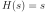
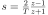
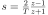
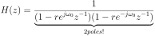
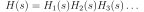
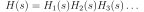
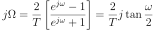
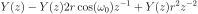
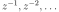
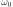

Next: The role of poles Up: Causal Signal Processing Previous: FIR Filter Contents
We define a first order filter which can be implemented, for example, as a simple RC network:
where its Laplace transform is a simple fraction: (153)
(153)
 (154)
(154)
 transfers into
transfers into  with the following recipe:
Thus, if you have the poles of an analogue system and you want
to have the poles in the z-plane you can transfer them with:
This also gives us a stability criterion. In the Laplace domain
the poles have to be in the left half plane (real value negative).
This means that in the sampled domain the poles have to lie within
the unit circle.
with the following recipe:
Thus, if you have the poles of an analogue system and you want
to have the poles in the z-plane you can transfer them with:
This also gives us a stability criterion. In the Laplace domain
the poles have to be in the left half plane (real value negative).
This means that in the sampled domain the poles have to lie within
the unit circle.
The same rule can be applied to zeros
together with Eq. 159 this is called “The matched z-transform method”. For example  turns into which is basically a DC filter.
which is basically a DC filter.
 . With that
information we directly have a difference equation in the
temporal domain:
This means that the output signal  is calculated by
adding the weighted and delayed output signal
. With that
information we directly have a difference equation in the
temporal domain:
This means that the output signal  is calculated by
adding the weighted and delayed output signal ![$y([n-1]T)$](img397.svg) to the input signal
to the input signal  .
How this actually works is shown in Fig. 21.
The attention is drawn to the sign inversion of the weighting
factor
.
How this actually works is shown in Fig. 21.
The attention is drawn to the sign inversion of the weighting
factor  in contrast to the transfer function
Eq. 158 where it is
in contrast to the transfer function
Eq. 158 where it is  . In general the recursive
coefficients change sign when they are taken from the transfer
function.
. In general the recursive
coefficients change sign when they are taken from the transfer
function.
 (165)
(165)
 are the FIR coefficients and
are the FIR coefficients and  the recursive coefficients.
Note the signs of the recursive coefficients are inverted in the
actual implementation of the filter. This can be seen when the
function is actually multiplied with an input signal to
obtain the output signal (see Eq. 164 and Fig. 21).
The “1” in the denominator represents actually the output of
the filter. If this factor is not one then the output will be scaled
by that factor. However, usually this is kept one.
the recursive coefficients.
Note the signs of the recursive coefficients are inverted in the
actual implementation of the filter. This can be seen when the
function is actually multiplied with an input signal to
obtain the output signal (see Eq. 164 and Fig. 21).
The “1” in the denominator represents actually the output of
the filter. If this factor is not one then the output will be scaled
by that factor. However, usually this is kept one.
In Python filtering is performed with the command:
import scipy.signal as signal Y = signal.lfilter(B,A,X)where B are the FIR coefficients, A the IIR coefficients and X is the input. For a pure FIR filter we just have:
Y = signal.lfilter(B,1,X)The “1” represents the output.
![\includegraphics[width=\textwidth]{iir_types}](img404.svg)
|
Fig. 22 shows the most popular filter topologies: Direct Form I and II. Because of the linear operation of the filter one is allowed to do the FIR and IIR operations in different orders. In Direct From I we have one accumulator and two delay lines whereas in the Direct Form II we have two accumulators and one delay line. Only the Direct Form I is suitable for integer operations.
A Python class of a direct form II filter can be implemented with a few lines:
class IIR_filter:
def __init__(self,_num,_den):
self.numerator = _num
self.denominator = _den
self.buffer1 = 0
self.buffer2 = 0
def filter(self,v):
input=0.0
output=0.0
input=v
output=(self.numerator[1]*self.buffer1)
input=input-(self.denominator[1]*self.buffer1)
output=output+(self.numerator[2]*self.buffer2)
input=input-(self.denominator[2]*self.buffer2)
output=output+input*self.numerator[0]
self.buffer2=self.buffer1
self.buffer1=input
return output
Here, the two delay steps are represented by two variables
buffer1 and buffer2.
In order to achive higher order filters one can then just chain these 2nd order filters. In Python this can be achieved by storing these in an array of instances of this class.
 so that they max out
the range of the integer coefficients. After the addition operation
they are shifted back by
so that they max out
the range of the integer coefficients. After the addition operation
they are shifted back by  bits to their original values.
bits to their original values.
For example if the largest IIR coefficient is 1.9 and we use 16 bit
signed numbers (max number is 32767) then one could multiply all
coefficients with  .
.
Then one needs to assess the maximum value in the accumulator which
is much more difficult than for FIR filters. For example,
resonators can generate high output values with even small input values
so that it's advisable to have a large overhead in the accumulator.
For example if the input signal is  bit and the scaling factor is
bit and the scaling factor is
 bits then the signal will certainly occupy
bits then the signal will certainly occupy  bits. With
an accumulator of 32 bits that gives only a headroom of 2 bits so the
output can only be 4 times larger than the input. A 64 bit accumulator
is a safe bet.
bits. With
an accumulator of 32 bits that gives only a headroom of 2 bits so the
output can only be 4 times larger than the input. A 64 bit accumulator
is a safe bet.
![\includegraphics[width=0.5\textwidth]{butterworth_poles}](img409.svg)
|
 ) to the sampled domain
(
) to the sampled domain
( ).
).
 which
is shown in Fig. 24. The Butterworth filter
is by far the most popular filter. Here are its properties:
which
is shown in Fig. 24. The Butterworth filter
is by far the most popular filter. Here are its properties:
need to be
transformed to digital transfer functions . This could be done
by the matched z-transform
(Eq. 160). However, the problem with these methods is that
they map frequencies 1:1 between the digital and analogue
domain. Remember: in the sampled domain there is no infinite frequency
but  which is the Nyquist frequency. This means that we never
get more damping than at Nyquist . This is especially a
problem for lowpass filters where damping increases the higher the
frequency.
which is the Nyquist frequency. This means that we never
get more damping than at Nyquist . This is especially a
problem for lowpass filters where damping increases the higher the
frequency.
The solution is to map all analogue frequencies from

to the sampled frequencies  in a non-linear way:
in a non-linear way:
 with
with  in our analogue transfer
function so that it's now digital. However, the cutoff frequency 
is still an analogue one but if we want to design a digital filter
we want to specify a digital cutoff frequency. Plus remember that
the frequency mapping is non-linear so that there is non-linear
mapping also of the cutoff.
in our analogue transfer
function so that it's now digital. However, the cutoff frequency 
is still an analogue one but if we want to design a digital filter
we want to specify a digital cutoff frequency. Plus remember that
the frequency mapping is non-linear so that there is non-linear
mapping also of the cutoff.
In the analogue domain the
frequency is given as  and in the sampled domain as
 . With the definition of the bilinear transform
we can establish how to map from our desired digital cutoff to
the analogue one:
. With the definition of the bilinear transform
we can establish how to map from our desired digital cutoff to
the analogue one:
That the bilinear transform is a nonlinear mapping between the analogue world and the digital world can be directly seen by just omitting the :
This also means that the cut-off frequency of our analogue filter is changed by the bilinear transformation. Consequently, we need to apply the same transformation to the cutoff frequency itself:
where is the sampling interval. This is often called “pre-warp”
but is simply the application of the same rule to the cut-off
frequency as what the bilinear transform does to the transfer function
. It has also another important result: we can now finally
specify our cut-off in the sampled domain in normalised frequencies
 by using Eq. 171. After all we
just use the analogue filter as a vehicle to design a digital filter.
We can now list our design steps.
,
for example Butterworth.
in the analogue transfer function
by

to obtain the digital filter
so that it only contains
negative powers of (
 ) which can be
interpreted as delay lines.
) which can be
interpreted as delay lines.
For filter-orders higher than two one needs to develop a different
strategy because the bilinear transform is a real pain to
calculate for anything above the order of two. Nobody wants to
transform high order analogue transfer functions to the
domain. However, there is an important property of all analogue
transfer functions: they generate complex conjugate pole pairs (plus
one real pole if of of odd order) which suggest a chain of 2nd order IIR
filters straight away (see Fig. 24). Remember
that a complex conjugate pole pair creates a 2nd order IIR filter with
with two delay steps. A real pole is a 1st order IIR filter with one
delay but is often also implemented as a 2nd order filter where the
coefficients of the 2nd delay are kept zero.
The design strategy is thus to split up the analogue transfer function
in a chain of 2nd order filters
 and then to apply the bilinear transform on every 2nd order
term separately. Using this strategy you only need to calculate the bilinear
transform once for a 2nd order system (or if the order is odd then
also for a 1st order one) but then there is no need to do any more
painful bilinear transforms. This is standard practise in IIR filter
design.
and then to apply the bilinear transform on every 2nd order
term separately. Using this strategy you only need to calculate the bilinear
transform once for a 2nd order system (or if the order is odd then
also for a 1st order one) but then there is no need to do any more
painful bilinear transforms. This is standard practise in IIR filter
design.
| Identical frequency response required: | Bilinear transform |
| Identical temporal behaviour required: | Matched z-transform |
Of course a 100% match won't be achieved but in practise this can be assumed. In most cases the bilinear transform is the transform of choice. The matched z transform can be very useful, for example in robotics where timing is important.
 (174)
(174)

![$\displaystyle p(n) = E[ \left( y (k) - y_{real} (k)\right)^{2}]
$](img432.svg) (175)
(175)
 which gives us equations for a and b which
implements a Kalman filter.
which gives us equations for a and b which
implements a Kalman filter.

 (
(

![\includegraphics[width=0.75\linewidth]{iir}](img389.svg)